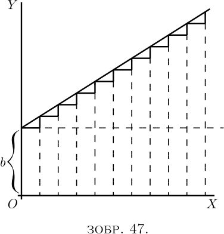
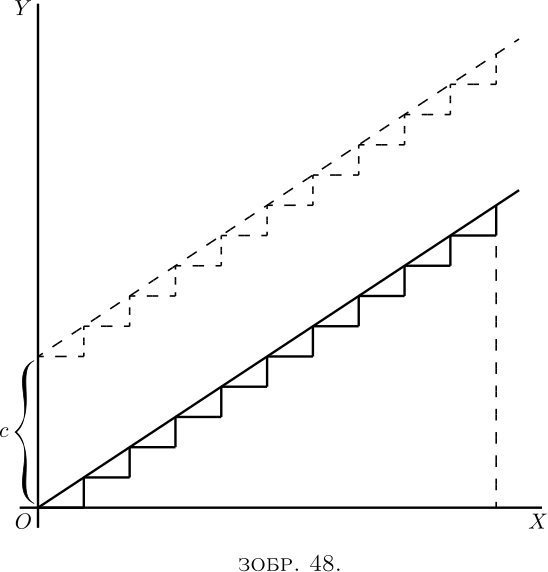
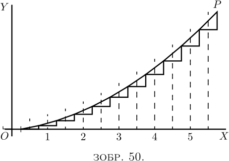
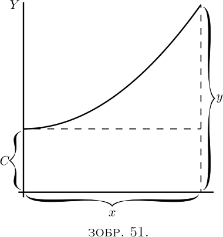

Ми вже розкрили великий секрет, що цей таємничий символ $\int$, який, зрештою, є лише довгим $S$, означає просто «суму» або «суму всіх таких величин, як». Отже він нагадує інший символ $\sum$ (грец. Сигма), що також є знаком суми. Однак у практиці математиків щодо використання цих символів існує така різниця, що в той час як $\sum$ зазвичай використовується для позначення суми ряду кінцевих величин, інтегральний знак $\int$ зазвичай використовується для позначення суми величезної кількості елементів невизначено малої величини, ледве малих часток, які складають загальну необхідну величину. Тобто, $\int dy = y$, а $\int dx = x$.
Будь-хто може зрозуміти, що усе можна уявити як складене з безлічі маленьких шматочків; і чим менші шматочки, тим більше їх буде. Таким чином, лінію завдовжки в один дюйм можна уявити як складену з $10$ частин, кожна з яких є $\frac{1}{10}$ дюйми завдовжки; або з $100$ частин, кожна з яких $\frac{1}{100}$ дюйми завдовжки; або з $1,000,000$ частин довжиною $\frac{1}{1,000,000}$ дюйми; або, підштовхнувши думку до меж мислимості, лінію можна вважати складеною з нескінченної кількості елементів, кожен з яких нескінченно малий.
Так, скажете ви, але яка користь думати таким чином? Чому б не подумати про це одразу у цілому? Проста причина полягає в тому, що існує величезна кількість випадків, коли неможливо обчислити розмір речі в цілому, не підрахувавши суму багатьох дрібних частин. Процес "інтегрування” надає нам змогу обчислити ціле, яке інакше ми не змогли б оцінити безпосередньо.
Давайте спочатку візьмемо один або два простих випадки, щоб ознайомитися з цим поняттям підсумовування багатьох окремих частин.
Розглянемо ряд: \[ 1 + \tfrac{1}{2} + \tfrac{1}{4} + \tfrac{1}{8} + \tfrac{1}{16} + \tfrac{1}{ 32} + \tfrac{1}{64} + \text{і т.д.} \]
Тут кожен член ряду формується, беручи половину значення попереднього. Яким буде значення у підсумку, якщо ми можемо перейти до нескінченної кількості доданків? Кожен школяр знає, що відповіддю буде $2$. Уявіть це, якщо хочете, як лінію. Почнемо з одного дюйма, додамо півдюйма, додамо чверть, додамо восьму частину і так далі. Якщо в будь-який момент операції ми зупинимося, все одно залишиться частина, якої не вистачає до цілих $2$ дюймів; і ця частина завжди матиме той самий розмір, що й остання додана частина. Таким чином, якщо після додавання $1$, $\frac{1}{2}$ і $\frac{1}{4}$ ми зупинимося, не вистачатиме $\frac{1}{4}$. Якщо ми будемо продовжувати, доки не додамо $\frac{1}{64}$, все ще не вистачатиме $\frac{1}{64}$. Необхідний залишок завжди дорівнюватиме останньому доданому члену. Тільки за допомогою нескінченної кількості операцій ми маємо досягти фактичних $2$ дюймів. На практиці ми досягнемо цього, коли частини стануть настільки малими, що їх неможливо буде відобразити, – це буде приблизно через $10$ членів, оскільки одинадцятий член становитиме $\frac{1}{1024}$. Якщо ми хочемо зайти так далеко, що навіть вимірювальна машина Вітворта не виявить цього, нам доведеться просто дійти приблизно до $20$ членів. Мікроскоп не покаже навіть $18^{\text{й}}$ член! Отже, нескінченна кількість операцій не така вже й лякаюча річ. Інтеграл це просто ціла множина. Але, як ми побачимо, є випадки, коли інтегральне числення дозволяє нам досягти точної суми, що складається з нескінченної кількості операційй. У таких випадках інтегральне числення дає нам швидкий і простий спосіб отримати результат, який інакше вимагав би нескінченної кількості ретельного опрацювання. Тож нам краще не витрачати час, а на навчитися інтегрувати.
Давайте зробимо невелику попередню примітку про нахили кривих. Ми бачили, що диференціювання кривої означає знаходження виразу для її нахилу (або для її нахилів у різних точках). Чи можемо ми здійснити зворотній процес, виконуючи реконструкцію всієї кривої, якщо нам заданий її нахил (чи нахили)?
Повернемося до випадку (2) тут. Ми маємо найпростішу з кривих - нахилену лінію з рівнянням \[ y = ax+b. \]

Ми знаємо, що $b$ тут означає початкову висоту $y$, коли $x= 0$, і що $a$, яка є тим самим, що і $\dfrac{dy}{dx}$, є «нахилом» лінії. Лінія має постійний нахил. Вздовж усієї неї маленькі трикутники
мають однакове відношення висоти до основи. Припустімо, ми повинні взяти $dx$ і $dy$ кінцевої величини, так що $10$ $dx$ становлять один дюйм, тоді буде десять маленьких трикутників, тобто
А тепер припустімо, що нам дали завдання реконструювати «криву», починаючи лише з інформації, що $\dfrac{dy}{dx} = a$. Що б ми могли зробити? Вважаючи, що маленькі $d$ мають кінцевий розмір, ми могли б намалювати їх, усі $10$ з однаковим нахилом, об’єднавшии їх кінцем до кінця ось так:

І, оскільки нахил є однаковим для всіх трикутників, вони об’єднаються, утворюючи лінію з нахилом $\dfrac{dy}{dx} = a$, як на Зображенні 48. І це незалежно від того, чи ми вважаємо $dy$ та $dx$ скінченними чи нескінченно малими, оскільки всі вони однакові (з нахилом $\dfrac{y}{x} = a$), і ми вважаємо $y$ загальною сумою всіх $dy$ і $x$ загальною сумою всіх $dx$. Але куди нам поставити цю нахилену лінію? Ми маємо почати з початку координат $O$ чи вище? Оскільки єдиною інформацією, що нам надана, є інформація про нахил, ми не маємо жодних вказівок щодо конкретної висоти над $O$; насправді початкова висота не визначена. Нахил буде однаковим незалежно від початкової висоти. Отже, давайте зробимо постріл туди, де щось може бути, і почнемо лінію на висоті $C$ над $O$. Тобто ми маємо рівняння \[ y = ax + C. \]
Тепер стає очевидним, що в цьому випадку додана константа означає конкретне значення $y$ при $x = 0$.
Візьмемо важчий випадок, лінію, нахил якої не є постійним, а стає все більшим і більшим. Припустімо, що нахил угору збільшується у міру зростання $x$. У символах це: \[ \frac{dy}{dx} = ax. \] Або, для конкретності, візьмемо $a = \frac{1}{5}$, тобто \[ \frac{dy}{dx} = \tfrac{1}{5} x. \]
Тоді нам краще почати з обчислення кількох значень нахилу при різних значеннях $x$, а також намалювати їх маленькі діаграми. Коли
| $x =0$ | $ \frac{dy}{dx} = 0, $ | |
| $x =1$ | $ \frac{dy}{dx} = 0.2, $ | |
| $x =2$ | $ \frac{dy}{dx} = 0.4, $ | |
| $x =3$ | $ \frac{dy}{dx} = 0.6, $ | |
| $x =4$ | $ \frac{dy}{dx} = 0.8, $ | |
| $x =5$ | $ \frac{dy}{dx} = 1.0. $ |
Тепер спробуйте скласти деталі докупи, встановивши кожен трикутник так, щоб середина його основи була на відповідній відстані праворуч, і щоб вони з’єднувалися у кутах, таким чином (Зображення 49). Результат, звісно, не гладка крива, але це наближення до неї. Якби ми взяли частинки вдвічі менші, і вдвічі більшу кількість, як на Зображенні 50, ми мали б краще наближення. Але для ідеальної кривої ми маємо вважати кожен $dx$ і відповідний йому $dy$ нескінченно малими та нескінченно численними.

Тоді яким має бути значення будь-якого $y$? Очевидно, що в будь-якій точці $P$ кривої значення $y$ буде сумою всіх маленьких $dy$ від $0$ до цього рівня, тобто $\int dy = y$. А оскільки кожен $dy$ дорівнює $\frac{1}{5}x · dx$, з цього випливає, що цілий $y$ дорівнюватиме сумі всіх частин $\frac{1}{5 }x · dx$, або, як ми маємо це писати, $\int \tfrac{1}{5}x · dx$.
Якби ми зробили $x$ постійним, $\int \tfrac{1}{5}x · dx$ був б тим самим, що і $\frac{1}{5} x \int dx$, або $\frac{ 1}{5}x^2$. Але $x$ починається з $0$ і зростає до певного значення $x$ у точці $P$, тож його середнє значення від $0$ до цієї точки становитиме $\frac{1}{2}x$ . Отже, $\int \tfrac{1}{5} x\, dx = \tfrac{1}{10} x^2$; або $y=\frac{1}{10}x^2$.
Але, як і в попередньому випадку, це вимагає додавання невизначеної константи $C$, оскільки нам не сказали, на якій висоті над початком координат почнеться крива, коли $x = 0$. Отже, ми запишемо як рівняння кривої, намалюваної на Зображенні 51, \[ y = \tfrac{1}{10}x^2 + C. \]

(2) Покажіть, що ряд $1 - \frac{1}{2} + \frac{1}{3} - \frac{1}{4} + \frac{1}{5} - \frac{1}{6} + \frac{1}{7} \text{ і т.д.}$, є збіжним, і знайдіть його суму до $8$ членів.
(3) Якщо $\log_\epsilon(1+x) = x - \dfrac{x^2}{2} + \dfrac{x^3}{3} - \dfrac{x^4}{4} + \text{і т.д.}$, знайдіть $\log_\epsilon 1.3$.
(4) Дотримуючись міркувань, подібних до тих, що надані в цьому розділі, знайдіть $y$, \[ (a) \text{якщо}\; \frac{dy}{dx} = \tfrac{1}{4} x; (b) \text{якщо}\; \frac{dy}{dx} = \cos x. \]
(5) Якщо $\dfrac{dy}{dx} = 2x + 3$, знайдіть $y$.
(1) $1\frac{1}{3}$.
(2) $0.6344$.
(3) $0.2624$.
(4) (a ) $y = \frac{1}{8} x^2 + C$; (b ) $y = \sin x + C$.
(5) $y = x^2 + 3x + C$.